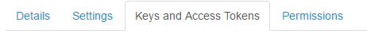
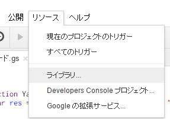

Twitter Bot 作成
Google Apps Scriptで、TwitterのBotを作成します、
最初は、
［GAS］Google Apps Scriptでツイートを投稿する
こちらを参考に始めました。
ここで、
新規アプリケーションを登録します。
名前やら、Emailの入力がありますので、全部入れて、
Sign Up
My apps
で自分のページに入れます。
入れる項目は多いですが、
必須項目以外は適当に流しても構いせん。
後で修正できますので。
Callback URL
ここに、
https://script.google.com/macros/d/スプレッドシートキー/usercallback
https://docs.google.com/spreadsheets/d/○△□/edit#gid=0
URIの、この「○△□」の部分になります。

この、
Keys and Access Tokens
有効にするために、一番下のボタン押下が必要になります。
以上でTwitter側は終わりで、
スプレッドシートで、スクリプトを作成します。
ここからは、
Google Apps ScriptでOAuthConfigのサポートが終了してTwitter botが危険そうだったので変更
こちらのスクリプトを使う事にしました。
こちらは、かなり親切に書かれているので、書かれている通りに進めばほぼ問題ありませんでした。
ただし、何か所かは、あれれ・・・
となりましたので、書いておきます。
Mb2Vpd5nfD3Pz-_a-39Q4VfxhMjh3Sh48
を追加します。

Mb2Vpd5nfD3Pz-_a-39Q4VfxhMjh3Sh48
を入れれば出てきますが、
バージョンが問題で、最新なら良いという事はなく、
現在は、14くらいまで表示されますが、14では動きませんでした。
そこで、参考にしたページの画像にあった、7を指定することで動作した次第です。
スクリプト
projectKey: "**************",
consumerKey: "**************",
consumerSecret: "*************",
apiUrl: "https://api.twitter.com/1.1/",
oauth: {
プロジェクト キー
Twitterの Consumer Key
Twitterの Consumer Secre
この値を変更します。
プロジェクトキー
今回の方法も、いつまで使えるか心配になってきますが・・・
このプロジェクトキーです。
Consumer KeyとConsumer Secre
認証
twitterAuthorizeUrl
を実行し、ログを見て、
ツイートのテスト
function TweetTest() {
var res = Twitter.tweet("GASテストツイート");
}
無事ツイートされていれば大成功ということです。
Botの作成
function YamaTweet() {
var ash = SpreadsheetApp.getActiveSpreadsheet();
var sheet = ash.getActiveSheet();
var lastRow = sheet.getLastRow();
var i = Math.floor( Math.random() * (lastRow-2))+2;
var res = Twitter.tweet(sheet.getRange(i, 1).getValue());
}
ランダムにツイートすることにしました。
乱数は0から始まり、先頭行は見出しなので、
-2を最大数として乱数を発生させて、+2で行数を求めています。
以上で、
Google Apps Scriptによる、Twitter Botの完成です。
同じテーマ「Google Apps Script入門」の記事
第30回.並べ替え
第31回.入力規則
第32回.グラフ
第33回.表示の固定
第34回.シート保護
第35回.スプレッドシートが非常に遅い、高速化するには
第36回.フォルダとファイルを扱う（DriveApp）
第37回.フォルダの一覧取得・作成・削除（Folder）
第38回.ファイルの一覧取得・削除（File）
Excel流の最終行の取得
Twitter Bot 作成
新着記事NEW ・・・新着記事一覧を見る
VBA100本ノック 100本目：WEBから100本ノックのリストを取得｜VBA練習問題（3月3日）
VBA100本ノック 99本目：自動席替え（行列と前後左右が全て違うように）｜VBA練習問題（3月2日）
VBA100本ノック 98本目：席替えルールが守られているか確認｜VBA練習問題（3月1日）
VBA100本ノック 97本目：Accessデータを取得（グループ集計）｜VBA練習問題（2月27日）
VBA100本ノック 96本目：Accessデータを取得（マスタ結合&抽出）｜VBA練習問題（2月26日）
VBA100本ノック 95本目：図形のテキストを検索するフォーム作成｜VBA練習問題（2月24日）
VBA100本ノック 94本目：表範囲からHTMLのtableタグを作成｜VBA練習問題（2月23日）
VBA100本ノック 93本目：複数ブックを連結して再分割｜VBA練習問題（2月22日）
VBA100本ノック 92本目：セルの色を16進で返す関数｜VBA練習問題（2月20日）
VBA100本ノック 91本目：時間計算（残業時間の月間合計）｜VBA練習問題（2月19日）
アクセスランキング ・・・ ランキング一覧を見る
1.最終行の取得（End,Rows.Count）｜VBA入門
2.RangeとCellsの使い方｜VBA入門
3.変数宣言のDimとデータ型｜VBA入門
4.マクロって何？VBAって何？｜VBA入門
5.Range以外の指定方法（Cells,Rows,Columns）｜VBA入門
6.セルのコピー&値の貼り付け（PasteSpecial）｜VBA入門
7.繰り返し処理（For Next)｜VBA入門
8.セルに文字を入れるとは（Range,Value）｜VBA入門
9.マクロはどこに書くの（VBEの起動）｜VBA入門
10.とにかく書いてみよう（Sub,End Sub）｜VBA入門
- ホーム
- その他
- Google Apps Script入門
- Twitter Bot 作成
このサイトがお役に立ちましたら「シェア」「Bookmark」をお願いいたします。
記述には細心の注意をしたつもりですが、
間違いやご指摘がありましたら、「お問い合わせ」からお知らせいただけると幸いです。
掲載のVBAコードは動作を保証するものではなく、あくまでVBA学習のサンプルとして掲載しています。
掲載のVBAコードは自己責任でご使用ください。万一データ破損等の損害が発生しても責任は負いません。